CODING AGENTS AS PIXEL WORLD MODELS
traex/DeepSeek-V4.1-Flash · 0195
点击播放 · 原生 RGB 像素
逐轮保存的候选
回放视频、检查图与代码变化。
每份候选均可单独播放。实际图片检查记录在下方工具轨迹中。
候选 01播放与检查图
点击播放 · 原生 RGB 像素

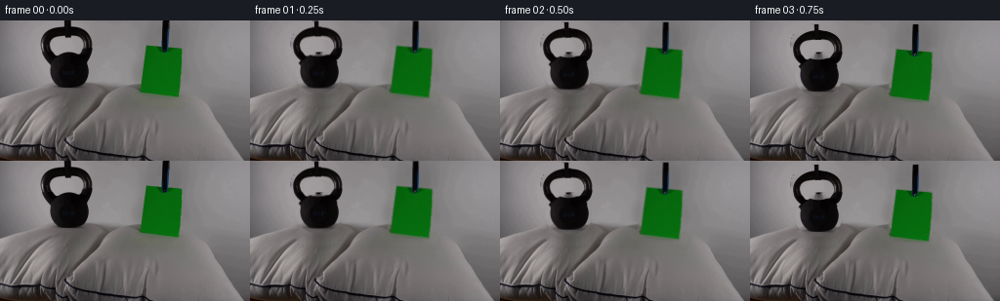
展开代码变化
--- 上一保存版本
+++ 本次保存版本
@@ -0,0 +1,321 @@
+from pathlib import Path
+
+import cv2
+import numpy as np
+from PIL import Image
+
+import artifact_io
+
+
+ROOT = Path(__file__).resolve().parent
+WIDTH = 256
+HEIGHT = 144
+FRAMES = 20
+FPS = 4
+
+
+def _supersampled_mask(draw_fn, scale=4):
+ mask = np.zeros((HEIGHT * scale, WIDTH * scale), np.uint8)
+ draw_fn(mask, scale)
+ return cv2.resize(mask, (WIDTH, HEIGHT), interpolation=cv2.INTER_AREA)
+
+
+def _kettlebell_mask():
+ def draw(mask, s):
+ cv2.rectangle(mask, (63 * s, 0), (70 * s, 12 * s), 255, -1)
+ cv2.ellipse(
+ mask,
+ (70 * s, 26 * s),
+ (26 * s, 20 * s),
+ 0,
+ 0,
+ 360,
+ 255,
+ -1,
+ lineType=cv2.LINE_AA,
+ )
+ cv2.ellipse(
+ mask,
+ (70 * s, 54 * s),
+ (24 * s, 20 * s),
+ 0,
+ 0,
+ 360,
+ 255,
+ -1,
+ lineType=cv2.LINE_AA,
+ )
+ # The handle opening is open background, not part of the object.
+ cv2.ellipse(
+ mask,
+ (70 * s, 26 * s),
+ (16 * s, 10 * s),
+ 0,
+ 0,
+ 360,
+ 0,
+ -1,
+ lineType=cv2.LINE_AA,
+ )
+
+ return _supersampled_mask(draw).astype(np.float32) / 255.0
+
+
+def _paper_mask(image):
+ b, g, r = cv2.split(image)
+ green = (
+ (g.astype(np.int16) > r.astype(np.int16) + 12)
+ & (g.astype(np.int16) > b.astype(np.int16) + 12)
+ & (g > 28)
+ ).astype(np.uint8)
+ roi = np.zeros_like(green)
+ roi[18:84, 136:192] = 1
+ green *= roi
+
+ count, labels, stats, _ = cv2.connectedComponentsWithStats(green, 8)
+ if count < 2:
+ raise RuntimeError("Could not isolate the green sheet")
+ index = 1 + int(np.argmax(stats[1:, cv2.CC_STAT_AREA]))
+ component = (labels == index).astype(np.uint8)
+ contours, _ = cv2.findContours(component, cv2.RETR_EXTERNAL, cv2.CHAIN_APPROX_SIMPLE)
+ sheet = np.zeros_like(component)
+ cv2.drawContours(sheet, contours, -1, 1, -1)
+ sheet = cv2.dilate(sheet, np.ones((3, 3), np.uint8), iterations=1)
+
+ def draw(mask, s):
+ points = np.array([[165, 0], [172, 0], [173, 28], [166, 32]], np.int32) * s
+ cv2.fillPoly(mask, [points], 255, lineType=cv2.LINE_AA)
+
+ strap = _supersampled_mask(draw).astype(np.float32) / 255.0
+ return np.maximum(sheet.astype(np.float32), strap)
+
+
+def _clean_plate(image, kettle_mask, paper_mask):
+ removal = np.zeros((HEIGHT, WIDTH), np.uint8)
+ removal[kettle_mask > 0.08] = 255
+ removal[paper_mask > 0.08] = 255
+
+ # Include the original contact shadows so they can be rebuilt at the new positions.
+ cv2.ellipse(removal, (70, 77), (22, 8), 0, 0, 360, 255, -1)
+ cv2.ellipse(removal, (164, 82), (25, 9), 0, 0, 360, 255, -1)
+ removal = cv2.dilate(removal, np.ones((5, 5), np.uint8), iterations=1)
+
+ return cv2.inpaint(image, removal, 5, cv2.INPAINT_TELEA)
+
+
+def _drop_distance(frame):
+ contact_time = 1.0
+ distance = 7.0
+ t = frame / FPS
+ if t <= contact_time:
+ return distance * (t / contact_time) ** 2
+ return distance
+
+
+def _kettle_dent(frame):
+ t = frame / FPS
+ if t <= 1.0:
+ return 0.0
+ tau = t - 1.0
+ growth = 4.4 * (1.0 - np.exp(-5.0 * tau))
+ rebound = 0.55 * np.exp(-2.3 * tau) * np.sin(13.0 * tau)
+ return max(0.0, growth + rebound)
+
+
+def _paper_dent(frame):
+ t = frame / FPS
+ if t <= 1.0:
+ return 0.0
+ tau = t - 1.0
+ return 0.55 * (1.0 - np.exp(-7.0 * tau))
+
+
+def _pillow_warp(image, cx, depth, width):
+ if depth < 0.02:
+ return image.copy()
+
+ yy, xx = np.mgrid[0:HEIGHT, 0:WIDTH].astype(np.float32)
+ surface = 76.0
+ horizontal = np.exp(-((xx - cx) / width) ** 4)
+ ramp = np.clip((yy - surface + 3.0) / 5.0, 0.0, 1.0)
+ vertical = np.exp(-np.maximum(yy - surface, 0.0) / 45.0)
+ displacement = depth * horizontal * ramp * vertical
+ map_x = xx
+ map_y = yy - displacement
+ map_xy = np.dstack([map_x, map_y]).astype(np.float32)
+ return cv2.remap(
+ image,
+ map_xy,
+ None,
+ interpolation=cv2.INTER_LINEAR,
+ borderMode=cv2.BORDER_REPLICATE,
+ )
+
+
+def _transform_layer(image, mask, dx, dy, angle=0.0, pivot=None):
+ alpha = (np.clip(mask, 0.0, 1.0) * 255.0).astype(np.uint8)
+ rgba = np.dstack([image, alpha])
+ if pivot is None:
+ pivot = (WIDTH / 2.0, HEIGHT / 2.0)
+ matrix = cv2.getRotationMatrix2D(pivot, angle, 1.0)
+ matrix[0, 2] += dx
+ matrix[1, 2] += dy
+ warped = cv2.warpAffine(
+ rgba,
+ matrix,
+ (WIDTH, HEIGHT),
+ flags=cv2.INTER_LINEAR,
+ borderMode=cv2.BORDER_CONSTANT,
+ borderValue=(0, 0, 0, 0),
+ )
+ return warped[:, :, :3], warped[:, :, 3].astype(np.float32) / 255.0
+
+
+def _composite(base, layer, alpha):
+ a = alpha[:, :, None]
+ return np.clip(base.astype(np.float32) * (1.0 - a) + layer.astype(np.float32) * a, 0, 255).astype(
+ np.uint8
+ )
+
+
+def _soft_ellipse_shadow(base, cx, cy, rx, ry, strength, sigma):
+ mask = np.zeros((HEIGHT, WIDTH), np.float32)
+ cv2.ellipse(mask, (round(cx), round(cy)), (round(rx), round(ry)), 0, 0, 360, 1.0, -1)
+ mask = cv2.GaussianBlur(mask, (0, 0), sigma)
+ out = base.astype(np.float32)
+ out *= 1.0 - strength * mask[:, :, None]
+ return np.clip(out, 0, 255).astype(np.uint8)
+
+
+def _contact_crease(base, cx, surface_y, depth):
+ if depth < 0.25:
+ return base
+ overlay = base.astype(np.float32)
+ crease = np.zeros((HEIGHT, WIDTH), np.float32)
+ radius_x = 24
+ radius_y = max(2, int(round(depth * 1.2)))
+ center = (int(round(cx)), int(round(surface_y + depth * 0.35)))
+ cv2.ellipse(
+ crease,
+ center,
+ (radius_x, radius_y),
+ 0,
+ 8,
+ 172,
+ 1.0,
+ 2,
+ lineType=cv2.LINE_AA,
+ )
+ crease = cv2.GaussianBlur(crease, (0, 0), 1.2)
+ overlay *= 1.0 - 0.17 * crease[:, :, None]
+
+ highlight = np.zeros((HEIGHT, WIDTH), np.float32)
+ cv2.ellipse(
+ highlight,
+ (int(round(cx)), int(round(surface_y + 1))),
+ (radius_x + 5, radius_y + 3),
+ 0,
+ 190,
+ 350,
+ 1.0,
+ 2,
+ lineType=cv2.LINE_AA,
+ )
+ highlight = cv2.GaussianBlur(highlight, (0, 0), 1.8)
+ overlay += 8.0 * highlight[:, :, None]
+ return np.clip(overlay, 0, 255).astype(np.uint8)
+
+
+def generate_frames():
+ original = np.array(Image.open(ROOT / "first_frame.png").convert("RGB"))
+ if original.shape != (HEIGHT, WIDTH, 3):
+ raise ValueError(f"Unexpected first-frame shape: {original.shape}")
+
+ kettle_mask = _kettlebell_mask()
+ paper_mask = _paper_mask(original)
+ clean = _clean_plate(original, kettle_mask, paper_mask)
+
+ kettle_change = cv2.dilate((kettle_mask > 0.03).astype(np.uint8), np.ones((7, 7), np.uint8))
+ paper_change = cv2.dilate((paper_mask > 0.03).astype(np.uint8), np.ones((7, 7), np.uint8))
+ contact_region = np.zeros((HEIGHT, WIDTH), np.uint8)
+ cv2.ellipse(contact_region, (70, 83), (34, 27), 0, 0, 360, 1, -1)
+ cv2.ellipse(contact_region, (164, 85), (31, 25), 0, 0, 360, 1, -1)
+
+ frames = []
+ for frame in range(FRAMES):
+ drop = _drop_distance(frame)
+ k_depth = _kettle_dent(frame)
+ p_depth = _paper_dent(frame)
+
+ warped = _pillow_warp(clean, 70, k_depth, 25.0)
+ warped = _pillow_warp(warped, 164, p_depth, 31.0)
+
+ # Replace only vacated/occupied/contact areas; untouched pixels retain the source plate.
+ kettle_now = np.zeros((HEIGHT, WIDTH), np.uint8)
+ paper_now = np.zeros((HEIGHT, WIDTH), np.uint8)
+ kettle_shift = int(np.ceil(drop + k_depth))
+ paper_shift = int(np.ceil(drop + p_depth * 0.5))
+ kettle_now[max(0, kettle_shift) :, :] = kettle_change[: HEIGHT - max(0, kettle_shift), :]
+ paper_now[max(0, paper_shift) :, :] = paper_change[: HEIGHT - max(0, paper_shift), :]
+ need = (kettle_change | paper_now | paper_change | contact_region).astype(bool)
+ base = original.copy()
+ base[need] = warped[need]
+
+ # The heavy bell casts a concentrated, progressively sharper shadow.
+ contact = np.clip((frame / FPS - 0.55) / 0.9, 0.0, 1.0)
+ base = _soft_ellipse_shadow(
+ base,
+ cx=70,
+ cy=76 + drop * 0.35 + k_depth * 0.5,
+ rx=17 + 3 * contact,
+ ry=4.5,
+ strength=0.09 + 0.09 * contact,
+ sigma=2.4 - 0.7 * contact,
+ )
+ base = _soft_ellipse_shadow(
+ base,
+ cx=166,
+ cy=79 + drop * 0.25 + p_depth * 0.4,
+ rx=21,
+ ry=3.2,
+ strength=0.045 + 0.035 * contact,
+ sigma=2.2,
+ )
+ base = _contact_crease(base, 70, 77, k_depth)
+
+ kettle_rgb, kettle_alpha = _transform_layer(
+ original,
+ kettle_mask,
+ 0.0,
+ drop + k_depth,
+ )
+
+ paper_sway = 0.35 * np.sin(frame * 0.9) * (1.0 - contact)
+ paper_angle = -0.55 * np.clip((frame - 4) / 7.0, 0.0, 1.0)
+ paper_rgb, paper_alpha = _transform_layer(
+ original,
+ paper_mask,
+ paper_sway,
+ drop + p_depth * 0.45,
+ angle=paper_angle,
+ pivot=(168.0, 70.0),
+ )
+
+ result = _composite(base, paper_rgb, paper_alpha)
+ result = _composite(result, kettle_rgb, kettle_alpha)
+ frames.append(result)
+
+ frames[0] = original.copy()
+ return np.stack(frames).astype(np.uint8)
+
+
+def main():
+ frames = generate_frames()
+ artifact_io.save(frames, ROOT)
+ Image.fromarray(frames[0]).save(ROOT / ".tmp" / "generated_frame00.png")
+ Image.fromarray(frames[9]).save(ROOT / ".tmp" / "generated_frame09.png")
+ Image.fromarray(frames[19]).save(ROOT / ".tmp" / "generated_frame19.png")
+
+
+if __name__ == "__main__":
+ main()
候选 02播放与检查图
点击播放 · 原生 RGB 像素

展开代码变化
--- 上一保存版本
+++ 本次保存版本
@@ -20,45 +20,24 @@
return cv2.resize(mask, (WIDTH, HEIGHT), interpolation=cv2.INTER_AREA)
-def _kettlebell_mask():
- def draw(mask, s):
- cv2.rectangle(mask, (63 * s, 0), (70 * s, 12 * s), 255, -1)
- cv2.ellipse(
- mask,
- (70 * s, 26 * s),
- (26 * s, 20 * s),
- 0,
- 0,
- 360,
- 255,
- -1,
- lineType=cv2.LINE_AA,
- )
- cv2.ellipse(
- mask,
- (70 * s, 54 * s),
- (24 * s, 20 * s),
- 0,
- 0,
- 360,
- 255,
- -1,
- lineType=cv2.LINE_AA,
- )
- # The handle opening is open background, not part of the object.
- cv2.ellipse(
- mask,
- (70 * s, 26 * s),
- (16 * s, 10 * s),
- 0,
- 0,
- 360,
- 0,
- -1,
- lineType=cv2.LINE_AA,
- )
-
- return _supersampled_mask(draw).astype(np.float32) / 255.0
+def _kettlebell_mask(image):
+ gray = cv2.cvtColor(image, cv2.COLOR_RGB2GRAY)
+ mask = np.zeros((HEIGHT, WIDTH), np.uint8)
+
+ # The bell is the only very dark subject. Row extents recover its full body
+ # while a luminance hole keeps the background visible through the handle.
+ for y in range(69):
+ dark = np.flatnonzero(gray[y, 35:105] < 82) + 35
+ if dark.size:
+ mask[y, dark.min() : dark.max() + 1] = 255
+
+ for y in range(14, 36):
+ opening = gray[y, 50:89] > 105
+ mask[y, 50:89][opening] = 0
+
+ mask = cv2.morphologyEx(mask, cv2.MORPH_CLOSE, np.ones((3, 3), np.uint8))
+ mask = cv2.GaussianBlur(mask, (3, 3), 0.55)
+ return mask.astype(np.float32) / 255.0
def _paper_mask(image):
@@ -231,15 +210,17 @@
if original.shape != (HEIGHT, WIDTH, 3):
raise ValueError(f"Unexpected first-frame shape: {original.shape}")
- kettle_mask = _kettlebell_mask()
+ kettle_mask = _kettlebell_mask(original)
paper_mask = _paper_mask(original)
clean = _clean_plate(original, kettle_mask, paper_mask)
kettle_change = cv2.dilate((kettle_mask > 0.03).astype(np.uint8), np.ones((7, 7), np.uint8))
paper_change = cv2.dilate((paper_mask > 0.03).astype(np.uint8), np.ones((7, 7), np.uint8))
contact_region = np.zeros((HEIGHT, WIDTH), np.uint8)
- cv2.ellipse(contact_region, (70, 83), (34, 27), 0, 0, 360, 1, -1)
- cv2.ellipse(contact_region, (164, 85), (31, 25), 0, 0, 360, 1, -1)
+ cv2.ellipse(contact_region, (70, 91), (42, 42), 0, 0, 360, 1, -1)
+ cv2.ellipse(contact_region, (164, 93), (38, 40), 0, 0, 360, 1, -1)
+ contact_blend = cv2.GaussianBlur(contact_region.astype(np.float32), (0, 0), 7.0)
+ contact_blend = np.clip(contact_blend, 0.0, 1.0)[:, :, None]
frames = []
for frame in range(FRAMES):
@@ -260,6 +241,12 @@
need = (kettle_change | paper_now | paper_change | contact_region).astype(bool)
base = original.copy()
base[need] = warped[need]
+ base = np.clip(
+ base.astype(np.float32) * (1.0 - contact_blend)
+ + warped.astype(np.float32) * contact_blend,
+ 0,
+ 255,
+ ).astype(np.uint8)
# The heavy bell casts a concentrated, progressively sharper shadow.
contact = np.clip((frame / FPS - 0.55) / 0.9, 0.0, 1.0)
候选 03播放与检查图
候选 04播放与检查图
点击播放 · 原生 RGB 像素

展开代码变化
--- 上一保存版本
+++ 本次保存版本
@@ -75,8 +75,8 @@
removal[paper_mask > 0.08] = 255
# Include the original contact shadows so they can be rebuilt at the new positions.
- cv2.ellipse(removal, (70, 77), (22, 8), 0, 0, 360, 255, -1)
- cv2.ellipse(removal, (164, 82), (25, 9), 0, 0, 360, 255, -1)
+ cv2.ellipse(removal, (70, 75), (24, 7), 0, 0, 360, 255, -1)
+ cv2.ellipse(removal, (164, 79), (26, 7), 0, 0, 360, 255, -1)
removal = cv2.dilate(removal, np.ones((5, 5), np.uint8), iterations=1)
return cv2.inpaint(image, removal, 5, cv2.INPAINT_TELEA)
@@ -217,8 +217,8 @@
kettle_change = cv2.dilate((kettle_mask > 0.03).astype(np.uint8), np.ones((7, 7), np.uint8))
paper_change = cv2.dilate((paper_mask > 0.03).astype(np.uint8), np.ones((7, 7), np.uint8))
contact_region = np.zeros((HEIGHT, WIDTH), np.uint8)
- cv2.ellipse(contact_region, (70, 91), (42, 42), 0, 0, 360, 1, -1)
- cv2.ellipse(contact_region, (164, 93), (38, 40), 0, 0, 360, 1, -1)
+ cv2.ellipse(contact_region, (70, 82), (42, 36), 0, 0, 360, 1, -1)
+ cv2.ellipse(contact_region, (164, 84), (38, 34), 0, 0, 360, 1, -1)
contact_blend = cv2.GaussianBlur(contact_region.astype(np.float32), (0, 0), 7.0)
contact_blend = np.clip(contact_blend, 0.0, 1.0)[:, :, None]
候选 05播放与检查图
候选 06播放与检查图
点击播放 · 原生 RGB 像素
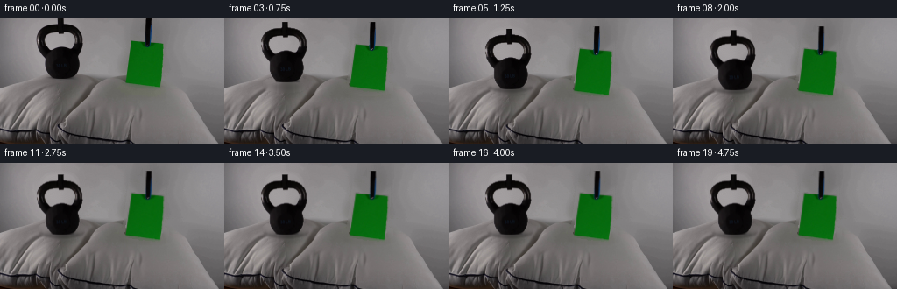
展开代码变化
--- 上一保存版本
+++ 本次保存版本
@@ -83,11 +83,12 @@
def _drop_distance(frame):
- contact_time = 1.0
- distance = 7.0
+ contact_time = 1.05
+ distance = 9.0
t = frame / FPS
if t <= contact_time:
- return distance * (t / contact_time) ** 2
+ progress = t / contact_time
+ return distance * (0.62 * progress**2 + 0.38 * progress**3)
return distance
@@ -95,7 +96,7 @@
t = frame / FPS
if t <= 1.0:
return 0.0
- tau = t - 1.0
+ tau = t - 1.05
growth = 4.4 * (1.0 - np.exp(-5.0 * tau))
rebound = 0.55 * np.exp(-2.3 * tau) * np.sin(13.0 * tau)
return max(0.0, growth + rebound)
@@ -105,7 +106,7 @@
t = frame / FPS
if t <= 1.0:
return 0.0
- tau = t - 1.0
+ tau = t - 1.05
return 0.55 * (1.0 - np.exp(-7.0 * tau))
@@ -231,14 +232,8 @@
warped = _pillow_warp(clean, 70, k_depth, 25.0)
warped = _pillow_warp(warped, 164, p_depth, 31.0)
- # Replace only vacated/occupied/contact areas; untouched pixels retain the source plate.
- kettle_now = np.zeros((HEIGHT, WIDTH), np.uint8)
- paper_now = np.zeros((HEIGHT, WIDTH), np.uint8)
- kettle_shift = int(np.ceil(drop + k_depth))
- paper_shift = int(np.ceil(drop + p_depth * 0.5))
- kettle_now[max(0, kettle_shift) :, :] = kettle_change[: HEIGHT - max(0, kettle_shift), :]
- paper_now[max(0, paper_shift) :, :] = paper_change[: HEIGHT - max(0, paper_shift), :]
- need = (kettle_change | paper_now | paper_change | contact_region).astype(bool)
+ # Replace only occupied/contact areas; untouched pixels retain the source plate.
+ need = (kettle_change | paper_change | contact_region).astype(bool)
base = original.copy()
base[need] = warped[need]
base = np.clip(
@@ -277,13 +272,13 @@
drop + k_depth,
)
- paper_sway = 0.35 * np.sin(frame * 0.9) * (1.0 - contact)
+ paper_sway = 0.22 * np.sin(frame * 0.9) * (1.0 - contact)
paper_angle = -0.55 * np.clip((frame - 4) / 7.0, 0.0, 1.0)
paper_rgb, paper_alpha = _transform_layer(
original,
paper_mask,
paper_sway,
- drop + p_depth * 0.45,
+ drop + p_depth * 0.28,
angle=paper_angle,
pivot=(168.0, 70.0),
)
候选 07播放与检查图
点击播放 · 原生 RGB 像素
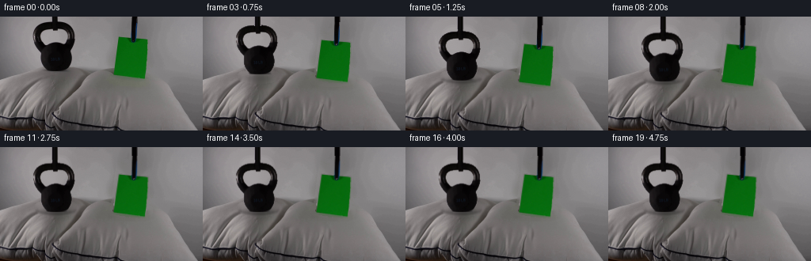
展开代码变化
--- 上一保存版本
+++ 本次保存版本
@@ -204,6 +204,19 @@
highlight = cv2.GaussianBlur(highlight, (0, 0), 1.8)
overlay += 8.0 * highlight[:, :, None]
return np.clip(overlay, 0, 255).astype(np.uint8)
+
+
+def _anchor_straps(frame, source, kettle_drop, paper_drop):
+ out = frame.copy()
+ if kettle_drop > 0.0:
+ top = min(HEIGHT, int(np.ceil(kettle_drop)) + 7)
+ strip = source[2:3, 65:74]
+ out[:top, 65:74] = np.repeat(strip, top, axis=0)
+ if paper_drop > 0.0:
+ top = min(HEIGHT, int(np.ceil(paper_drop)) + 2)
+ strip = source[2:3, 165:174]
+ out[:top, 165:174] = np.repeat(strip, top, axis=0)
+ return out
def generate_frames():
@@ -285,6 +298,7 @@
result = _composite(base, paper_rgb, paper_alpha)
result = _composite(result, kettle_rgb, kettle_alpha)
+ result = _anchor_straps(result, original, drop, drop)
frames.append(result)
frames[0] = original.copy()
可观测工具轨迹
实际执行的命令与返回图片。
命令 1exit 0
/bin/bash -c "pwd && rg --files -g 'prompt.txt' -g 'GENERATION_RULES.md' -g '"'!*.png'"' -g '"'!*.mp4'"' -g '"'!*.webm'"' | head -80"
命令 2exit 0
/bin/bash -c "find . -maxdepth 2 -type f -printf '%p\\n' | sort | head -200"
命令 3exit 0
/bin/bash -c 'git status --short && git log -3 --oneline'
命令 4exit 0
/bin/bash -c 'cat prompt.txt'
命令 5exit 0
/bin/bash -c 'cat GENERATION_RULES.md'
命令 6exit 0
/bin/bash -c "sed -n '1,240p' artifact_io.py && printf '\\n--- player ---\\n' && sed -n '1,200p' player_template.html"
命令 7exit 0
/bin/bash -c "python - <<'PY'
from PIL import Image
im=Image.open('first_frame.png')
print(im.size, im.mode)
PY"命令 8exit 0
/bin/bash -c "python - <<'PY' mods=['cv2','scipy','numpy','PIL','imageio'] for m in mods: try: x=__import__(m); print(m, getattr(x,'__version__','ok')) except Exception as e: print(m,'ERR',e) PY"
命令 9exit 0
/bin/bash -c "python - <<'PY'
from PIL import Image
im=Image.open('first_frame.png')
im.crop((35,0,205,115)).resize((680,460),Image.Resampling.NEAREST).save('.tmp/crop_scene.png')
im.crop((0,65,256,144)).resize((768,237),Image.Resampling.NEAREST).save('.tmp/crop_pillows.png')
PY"命令 10exit 0
/bin/bash -c "python - <<'PY'
from PIL import Image,ImageDraw,ImageFont
im=Image.open('first_frame.png').resize((1024,576),Image.Resampling.NEAREST)
d=ImageDraw.Draw(im)
for x in range(0,257,10):
X=x*4; d.line((X,0,X,576),fill=(255,50,50),width=1)
if x%20==0:d.text((X+2,2),str(x),fill=(255,255,0))
for y in range(0,145,10):
Y=y*4; d.line((0,Y,1024,Y),fill=(50,150,255),width=1)
if y%20==0:d.text((2,Y+2),str(y),fill=(255,255,0))
im.save('.tmp/grid.png')
PY"命令 11exit 0
/bin/bash -c "python - <<'PY'
from PIL import Image
import numpy as np
im=np.array(Image.open('first_frame.png'))
for p in [(128,10),(20,30),(130,40),(130,60),(120,90),(70,72),(83,60),(165,50),(165,78),(160,85),(200,80),(100,80)]:
x,y=p;print(p,im[y,x])
PY"命令 12exit 0
/bin/bash -c "python - <<'PY'
import cv2, numpy as np
im=cv2.imread('first_frame.png')
g=cv2.cvtColor(im,cv2.COLOR_BGR2GRAY)
ed=cv2.Canny(g,20,50)
cv2.imwrite('.tmp/edges.png',ed)
PY"命令 13exit 0
/bin/bash -c "python - <<'PY'
from PIL import Image
im=Image.open('first_frame.png')
for name,box,scale in [('kb',(40,3,98,74),6),('paper',(136,20,190,80),6)]:
im.crop(box).resize(((box[2]-box[0])*scale,(box[3]-box[1])*scale),Image.Resampling.NEAREST).save(f'.tmp/{name}.png')
PY"命令 14exit 0
/bin/bash -c "python - <<'PY'
import cv2,numpy as np
im=cv2.imread('first_frame.png')
# print gray and HSV stats by regions; paper edges via green excess
b,g,r=cv2.split(im)
m=(g.astype(int)>r.astype(int)+15)&(g.astype(int)>b.astype(int)+15)&(g>30)
y,x=np.where(m)
print('green bbox',x.min(),x.max(),y.min(),y.max(),'count',len(x))
# contours
n,lab,stats,cent=cv2.connectedComponentsWithStats(m.astype('uint8'))
for i in range(1,n):
x,y,w,h,a=stats[i]; print(i,(x,y,w,h,a))
PY"命令 15exit 0
/bin/bash -c "python - <<'PY'
from PIL import Image
im=Image.open('first_frame.png')
# representative enlarged crops for background inpaint and object masks
for name,box in [('kb_context',(25,0,110,90)),('paper_context',(125,10,200,95)),('left_pillow',(0,65,130,144)),('right_pillow',(120,65,256,144))]:
im.crop(box).resize(((box[2]-box[0])*4,(box[3]-box[1])*4),Image.Resampling.NEAREST).save(f'.tmp/{name}.png')
PY"命令 16exit 0
/bin/bash -c "python - <<'PY'
from PIL import Image
import numpy as np
im=np.array(Image.open('first_frame.png'))
# median per rows in clean wall bands x=0:30 and x=215:255 and clean pillow left edge
for y in range(0,120,10):
print(y, 'wall', np.median(im[y,0:30],axis=0).astype(int), 'right',np.median(im[y,220:256],axis=0).astype(int))
PY"命令 17exit 0
/bin/bash -c "python - <<'PY'
import cv2,numpy as np
im=cv2.imread('first_frame.png')
# background fill for object bboxes via inpaint, test
mask=np.zeros(im.shape[:2],np.uint8)
mask[0:78,37:99]=255
mask[20:81,138:190]=255
out=cv2.inpaint(im,mask,7,cv2.INPAINT_TELEA)
cv2.imwrite('.tmp/bg_inpaint.png',out)
# larger pixel nearest
cv2.imwrite('.tmp/bg_inpaint_4x.png',cv2.resize(out,None,fx=4,fy=4,interpolation=cv2.INTER_NEAREST))
PY"命令 18exit 0
/bin/bash -c "python - <<'PY'
from PIL import Image
im=Image.open('first_frame.png')
# save candidates highlighting possible support line around y=68..80
im.crop((0,55,256,100)).resize((1024,180),Image.Resampling.NEAREST).save('.tmp/support_band.png')
PY"命令 19exit 0
/bin/bash -c "python - <<'PY'
from PIL import Image
import numpy as np
im=np.array(Image.open('first_frame.png'))
# print vertical profiles in clean regions and potential table region
for x in [5,30,110,125,210,250]:
print('x',x, [(y,tuple(im[y,x])) for y in range(60,145,5)])
PY"命令 20exit 0
/bin/bash -c "python - <<'PY'
from PIL import Image
import numpy as np
im=np.array(Image.open('first_frame.png')).astype(float)
# sample left/right background color along row by x, gray differences
for y in [0,20,40,60,75,85,100,120,140]:
print('\\ny',y)
for x in range(0,256,16): print(x, tuple(im[y,x].astype(int)), end='; ')
print()
PY"命令 21exit 1
/bin/bash -c 'mkdir -p .tmp && python generate.py'
命令 22exit 1
/bin/bash -c 'python generate.py'
命令 23exit 0
/bin/bash -c 'python generate.py'
命令 24exit 0
/bin/bash -c "python - <<'PY'
import cv2,numpy as np
im=cv2.imread('first_frame.png')
# inspect exact RGB around kettle boundaries; write coordinate-labelled crop
crop=im[0:90,25:115]
# masks by luminance and local color
hsv=cv2.cvtColor(im,cv2.COLOR_BGR2HSV)
for lo in [30,45,60,75,90]:
m=(cv2.cvtColor(im,cv2.COLOR_BGR2GRAY)<lo).astype(np.uint8)
print(lo,m[0:85,30:110].sum())
cv2.imwrite('.tmp/kettle_gray40.png',(cv2.cvtColor(im,cv2.COLOR_BGR2GRAY)<40).astype(np.uint8)*255)
cv2.imwrite('.tmp/kettle_gray60.png',(cv2.cvtColor(im,cv2.COLOR_BGR2GRAY)<60).astype(np.uint8)*255)
PY"命令 25exit 0
/bin/bash -c "python - <<'PY'
from PIL import Image
import numpy as np
im=np.array(Image.open('first_frame.png'))
for y in range(0,82,4):
row=im[y,25:115].mean(1)
# runs under 100
runs=[]; st=None
for i,v in enumerate(row):
if v<100 and st is None:st=i+25
if v>=100 and st is not None:runs.append((st,i+24));st=None
if st is not None:runs.append((st,114))
print(y,runs)
PY"命令 26exit 0
/bin/bash -c "python - <<'PY'
import cv2,numpy as np
im=cv2.imread('first_frame.png');g=cv2.cvtColor(im,cv2.COLOR_BGR2GRAY)
# try GrabCut rect kettle
mask=np.zeros(g.shape,np.uint8);bgdModel=np.zeros((1,65),np.float64);fgdModel=np.zeros((1,65),np.float64)
mask[:]=2
rect=(39,0,57,77)
cv2.grabCut(im,mask,rect,bgdModel,fgdModel,5,cv2.GC_INIT_WITH_RECT)
fg=np.isin(mask,[1,3]).astype('uint8')*255
cv2.imwrite('.tmp/kettle_grabcut.png',fg)
PY"命令 27exit 0
/bin/bash -c "python - <<'PY'
from PIL import Image
import numpy as np
im=np.array(Image.open('first_frame.png'))
for y in range(0,80,2):
row=im[y].mean(1)
print('%2d'%y, ''.join('#' if v<45 else '+' if v<80 else '.' if v<115 else ' ' for v in row[35:101]))
PY"命令 28exit 0
/bin/bash -c "python - <<'PY'
from PIL import Image
import numpy as np
im=np.array(Image.open('first_frame.png'))
# At source, pillow boundary around kettle likely y=68-78. Evaluate pixels and edges
crop=im[60:85,35:105]
Image.fromarray(crop).resize((700,250),Image.Resampling.NEAREST).save('.tmp/kb_base.png')
PY"命令 29exit 0
/bin/bash -c "python - <<'PY'
import cv2,numpy as np
im=cv2.imread('first_frame.png'); g=cv2.cvtColor(im,cv2.COLOR_BGR2GRAY)
for t in [70,80,90,100,110]:
m=(g<t).astype(np.uint8)*255;m[:, :35]=0;m[:,105:]=0;m[82:,:]=0
n,lab,st,_=cv2.connectedComponentsWithStats(m)
idx=1+np.argmax(st[1:,4]); comp=(lab==idx).astype(np.uint8)*255
cv2.imwrite(f'.tmp/mask{t}.png',comp)
print(t,st[idx].tolist())
PY"命令 30exit 0
/bin/bash -c "python - <<'PY'
from PIL import Image
im=Image.open('first_frame.png')
# foreground textures around kettle at 8x and paper at 8x
im.crop((35,0,108,83)).resize((584,664),Image.Resampling.NEAREST).save('.tmp/kb_full.png')
PY"命令 31exit 0
/bin/bash -c "python - <<'PY'
import cv2,numpy as np
im=cv2.imread('first_frame.png')
# alpha mask threshold via grayscale, remove pillow base manually by rows
G=cv2.cvtColor(im,cv2.COLOR_BGR2GRAY)
m=np.zeros(G.shape,np.uint8)
for y in range(0,80):
row=G[y,35:105]
for i,v in enumerate(row):
if v<78:m[y,35+i]=255
# constrain outside geometry
poly=np.zeros_like(m); cv2.fillPoly(poly,[np.array([[63,0],[72,0],[72,8],[95,8],[96,78],[43,78],[43,8],[63,8]],np.int32)],255)
# don't constrain to rough poly yet
n,lab,st,_=cv2.connectedComponentsWithStats(m)
idx=1+np.argmax(st[1:,4]); m=(lab==idx).astype(np.uint8)*255
m=cv2.morphologyEx(m,cv2.MORPH_CLOSE,np.ones((3,3),np.uint8))
cv2.imwrite('.tmp/kb_mask_real.png',m)
# rgba over checkerboard / green
rgba=np.dstack([im,cv2.GaussianBlur(m,(3,3),0.7)])
cv2.imwrite('.tmp/kb_mask_alpha.png',rgba)
PY"命令 32exit 0
/bin/bash -c "python - <<'PY'
from PIL import Image
import numpy as np
im=np.array(Image.open('first_frame.png'))
for y in range(0,83,2):
print('%2d'%y, ''.join('#' if im[y,x].mean()<45 else '+' if im[y,x].mean()<80 else '.' if im[y,x].mean()<115 else ' ' for x in range(35,101)))
PY"命令 33exit 0
/bin/bash -c "python - <<'PY'
from PIL import Image
import numpy as np
im=np.array(Image.open('first_frame.png'))
# paper silhouette threshold for green; row spans
m=(im[:,:,1].astype(int)>im[:,:,0].astype(int)+10)&(im[:,:,1].astype(int)>im[:,:,2].astype(int)+10)&(im[:,:,1]>25)
for y in range(20,82,2):
xs=np.where(m[y,130:200])[0]+130
print(y,(xs.min(),xs.max(),len(xs)) if len(xs) else None)
PY"命令 34exit 0
/bin/bash -c "python - <<'PY'
from PIL import Image
import numpy as np
im=np.array(Image.open('first_frame.png'))
for y in range(62,82,2):
print('y',y)
print([(x,tuple(im[y,x])) for x in range(140,190,4)])
PY"命令 35exit 0
/bin/bash -c "python - <<'PY'
from PIL import Image
import numpy as np
for i in [0,4,9,19]:
a=np.array(Image.open(f'frames/{i:02d}.png'))
# dark pixels in kettle region x40:100
m=(a[:,:,0]<50)&(a[:,:,1]<50)&(a[:,:,2]<50)
ys,xs=np.where(m[:,30:110]); xs=xs+30
print(i,'dark bbox',xs.min(),xs.max(),ys.min(),ys.max(),'count',len(xs))
# green bbox
m=(a[:,:,1].astype(int)>a[:,:,0].astype(int)+10)&(a[:,:,1].astype(int)>a[:,:,2].astype(int)+10)
ys,xs=np.where(m);print(' green',xs.min(),xs.max(),ys.min(),ys.max())
PY"命令 36exit 0
/bin/bash -c "python - <<'PY'
from PIL import Image
im=Image.open('first_frame.png')
# enlarge each temporal crop with nearest; generated object masks over full image
for i in [0,4,8,9,12,19]: im2=Image.open(f'frames/{i:02d}.png'); im2.crop((25,0,205,144)).resize((720,576),Image.Resampling.NEAREST).save(f'.tmp/t{i:02d}.png')
PY"命令 37exit 0
/bin/bash -c "python - <<'PY'
from PIL import Image
import numpy as np
a=np.array(Image.open('first_frame.png'))
for y in range(0,80,2):
print('%2d'%y, ''.join(' ' if a[y,x].mean()>100 else '.' if a[y,x].mean()>70 else '+' if a[y,x].mean()>30 else '#' for x in range(35,101)))
PY"命令 38exit 0
/bin/bash -c "python - <<'PY'
import cv2,numpy as np
im=cv2.imread('first_frame.png');g=cv2.cvtColor(im,cv2.COLOR_BGR2GRAY)
# manually mask per row based on threshold, including entire object interior, excluding shadows
m=np.zeros_like(g)
for y in range(0,79):
xs=np.where(g[y,35:105]<82)[0]+35
if not len(xs):continue
# retain contiguous region around expected center 69
runs=[];st=xs[0];prev=xs[0]
for x in xs[1:]:
if x>prev+1:runs.append((st,prev));st=x
prev=x
runs.append((st,prev))
# choose run closest to 69 and combine adjacent if split by highlights (within 10)
sel=[r for r in runs if r[0]<82 and r[1]>56]
if sel:
lo=min(r[0] for r in sel);hi=max(r[1] for r in sel)
m[y,lo:hi+1]=255
# keep bottom only through y77
m[79:]=0
m=cv2.morphologyEx(m,cv2.MORPH_CLOSE,np.ones((3,3),np.uint8))
cv2.imwrite('.tmp/kb_mask_rows.png',m)
PY"命令 39exit 0
/bin/bash -c "python - <<'PY'
import cv2,numpy as np
im=cv2.imread('first_frame.png');g=cv2.cvtColor(im,cv2.COLOR_BGR2GRAY)
m=np.zeros_like(g)
for y in range(0,79):
xs=np.where(g[y,35:105]<82)[0]+35
if not len(xs):continue
runs=[];st=xs[0];prev=xs[0]
for x in xs[1:]:
if x>prev+1:runs.append((st,prev));st=x
prev=x
runs.append((st,prev))
sel=[r for r in runs if r[0]<82 and r[1]>56]
if sel:
lo=min(r[0] for r in sel);hi=max(r[1] for r in sel)
m[y,lo:hi+1]=255
m[79:]=0
m=cv2.morphologyEx(m,cv2.MORPH_CLOSE,np.ones((3,3),np.uint8))
a=cv2.cvtColor(im,cv2.COLOR_BGR2BGRA);a[:,:,3]=m
cv2.imwrite('.tmp/kb_mask_rows_rgba.png',a)
PY"命令 40exit 0
/bin/bash -c "python - <<'PY'
from PIL import Image
im=Image.open('.tmp/kb_mask_rows_rgba.png').convert('RGBA')
bg=Image.new('RGBA',im.size,(220,40,180,255));bg.alpha_composite(im);bg.convert('RGB').crop((35,0,108,82)).resize((584,656),Image.Resampling.NEAREST).save('.tmp/kb_alpha_check.png')
PY"命令 41exit 0
/bin/bash -c "python - <<'PY'
import cv2,numpy as np
im=cv2.imread('first_frame.png');g=cv2.cvtColor(im,cv2.COLOR_BGR2GRAY)
m=np.zeros_like(g)
for y in range(0,79):
xs=np.where(g[y,35:105]<82)[0]+35
if not len(xs):continue
runs=[];st=xs[0];prev=xs[0]
for x in xs[1:]:
if x>prev+1:runs.append((st,prev));st=x
prev=x
runs.append((st,prev))
sel=[r for r in runs if r[0]<82 and r[1]>56]
if sel:
lo=min(r[0] for r in sel);hi=max(r[1] for r in sel)
m[y,lo:hi+1]=255
# remove shadows / base: bottom follows visible silhouette except support area y>=66
# object rows shrink; threshold mask already near base but shadow enters. use max x extent.
m[79:]=0
m=cv2.morphologyEx(m,cv2.MORPH_CLOSE,np.ones((5,5),np.uint8))
a=cv2.cvtColor(im,cv2.COLOR_BGR2BGRA);a[:,:,3]=m
cv2.imwrite('.tmp/kb_mask_rows_rgba2.png',a)
PY"命令 42exit 0
/bin/bash -c "python - <<'PY'
from PIL import Image
im=Image.open('.tmp/kb_mask_rows_rgba2.png').convert('RGBA'); bg=Image.new('RGBA',im.size,(220,40,180,255));bg.alpha_composite(im);bg.convert('RGB').crop((35,0,108,82)).resize((584,656),Image.Resampling.NEAREST).save('.tmp/kb_alpha_check2.png')
PY"命令 43exit 0
/bin/bash -c "python - <<'PY'
from PIL import Image
import numpy as np
im=np.array(Image.open('first_frame.png'))
for y in range(0,80):
xs=[]
for x in range(35,105):
if im[y,x].mean()<82:xs.append(x)
if xs:
# print extents all
print(y,min(xs),max(xs))
PY"命令 44exit 0
/bin/bash -c "python - <<'PY'
from PIL import Image
import numpy as np
im=np.array(Image.open('first_frame.png'))
# get x runs at y70
for y in [68,69,70,71,72,73,74,75,76,77,78,79]:
print(y,[(x,im[y,x].mean().round().astype(int)) for x in range(45,101,2)])
PY"命令 45exit 0
/bin/bash -c "python - <<'PY'
import cv2,numpy as np
im=cv2.imread('first_frame.png');g=cv2.cvtColor(im,cv2.COLOR_BGR2GRAY)
m=np.zeros_like(g)
# row extents are the cleanest silhouette; manually eliminate shadow outliers below base
for y in range(0,70):
xs=np.where(g[y,35:105]<82)[0]+35
if not len(xs):continue
# largest run close to object
runs=[];st=xs[0];prev=xs[0]
for x in xs[1:]:
if x>prev+1:runs.append((st,prev));st=x
prev=x
runs.append((st,prev))
sel=[r for r in runs if r[0]<82 and r[1]>56]
if sel:
lo=min(r[0] for r in sel);hi=max(r[1] for r in sel);m[y,lo:hi+1]=255
# lower silhouette manually fit from observed edges through base y69
for y,lo,hi in [(70,60,87),(71,60,87),(72,59,87),(73,59,87),(74,59,87),(75,59,86),(76,59,86),(77,59,86)]:m[y,lo:hi+1]=255
m=cv2.morphologyEx(m,cv2.MORPH_CLOSE,np.ones((3,3),np.uint8))
m=cv2.GaussianBlur(m,(3,3),0.5)
a=cv2.cvtColor(im,cv2.COLOR_BGR2BGRA);a[:,:,3]=m
cv2.imwrite('.tmp/kb_mask_final.png',a)
PY"命令 46exit 0
/bin/bash -c "python - <<'PY'
from PIL import Image
im=Image.open('.tmp/kb_mask_final.png').convert('RGBA'); bg=Image.new('RGBA',im.size,(220,40,180,255));bg.alpha_composite(im);bg.convert('RGB').crop((35,0,108,82)).resize((584,656),Image.Resampling.NEAREST).save('.tmp/kb_alpha_final.png')
PY"命令 47exit 0
/bin/bash -c "python - <<'PY'
from PIL import Image
im=Image.open('.tmp/kb_mask_final.png')
print(im.mode, im.getextrema())
PY"命令 48exit 0
/bin/bash -c "python - <<'PY'
import cv2,numpy as np
im=cv2.imread('first_frame.png');g=cv2.cvtColor(im,cv2.COLOR_BGR2GRAY)
m=np.zeros_like(g)
for y in range(0,70):
xs=np.where(g[y,35:105]<82)[0]+35
if not len(xs):continue
runs=[];st=xs[0];prev=xs[0]
for x in xs[1:]:
if x>prev+1:runs.append((st,prev));st=x
prev=x
runs.append((st,prev))
sel=[r for r in runs if r[0]<82 and r[1]>56]
if sel:
lo=min(r[0] for r in sel);hi=max(r[1] for r in sel);m[y,lo:hi+1]=255
for y,lo,hi in [(70,60,87),(71,60,87),(72,59,87),(73,59,87),(74,59,87),(75,59,86),(76,59,86),(77,59,86)]:m[y,lo:hi+1]=255
m=cv2.morphologyEx(m,cv2.MORPH_CLOSE,np.ones((3,3),np.uint8))
# make alpha image directly (BGRA), not rely on cv2 cvt order confusion
out=np.dstack([im,m])
cv2.imwrite('.tmp/kb_mask_final2.png',out)
print(m.max(),m.sum()/255,np.unique(m)[:20])
PY"命令 49exit 0
/bin/bash -c "python - <<'PY'
from PIL import Image
im=Image.open('.tmp/kb_mask_final2.png').convert('RGBA'); bg=Image.new('RGBA',im.size,(220,40,180,255));bg.alpha_composite(im);bg.convert('RGB').crop((35,0,108,82)).resize((584,656),Image.Resampling.NEAREST).save('.tmp/kb_alpha_final2.png')
PY"命令 50exit 0
/bin/bash -c "python - <<'PY'
from PIL import Image
im=Image.open('.tmp/kb_mask_final2.png');print(im.getpixel((70,30)),im.getpixel((60,30)),im.getpixel((70,50)))
PY"命令 51exit 0
/bin/bash -c "python - <<'PY'
from PIL import Image
im=Image.open('.tmp/kb_mask_final2.png').convert('RGBA')
# composite each manually with numeric alpha
import numpy as np
a=np.array(im); bg=np.zeros_like(a[:,:,:3]);bg[:]=[220,40,180]
al=a[:,:,3:4].astype(float)/255
out=(a[:,:,:3].astype(float)*al+bg.astype(float)*(1-al)).astype('uint8')
Image.fromarray(out).crop((35,0,108,82)).resize((584,656),Image.Resampling.NEAREST).save('.tmp/kb_alpha_final3.png')
PY"命令 52exit 0
/bin/bash -c "python - <<'PY'
import cv2,numpy as np
im=cv2.imread('first_frame.png');g=cv2.cvtColor(im,cv2.COLOR_BGR2GRAY)
m=np.zeros_like(g)
for y in range(0,70):
xs=np.where(g[y,35:105]<82)[0]+35
if not len(xs):continue
runs=[];st=xs[0];prev=xs[0]
for x in xs[1:]:
if x>prev+1:runs.append((st,prev));st=x
prev=x
runs.append((st,prev))
sel=[r for r in runs if r[0]<82 and r[1]>56]
if sel:
lo=min(r[0] for r in sel);hi=max(r[1] for r in sel);m[y,lo:hi+1]=255
for y,lo,hi in [(70,60,87),(71,60,87),(72,59,87),(73,59,87),(74,59,87),(75,59,86),(76,59,86),(77,59,86)]:m[y,lo:hi+1]=255
m=cv2.morphologyEx(m,cv2.MORPH_CLOSE,np.ones((3,3),np.uint8))
# RGBA PIL-native order
out=np.dstack([cv2.cvtColor(im,cv2.COLOR_BGR2RGB),m])
cv2.imwrite('.tmp/kb_rgba_right.png',out)
PY"命令 53exit 0
/bin/bash -c "python - <<'PY'
from PIL import Image
im=Image.open('.tmp/kb_rgba_right.png').convert('RGBA');bg=Image.new('RGBA',im.size,(220,40,180,255));bg.alpha_composite(im);bg.convert('RGB').crop((35,0,108,82)).resize((584,656),Image.Resampling.NEAREST).save('.tmp/kb_alpha_right.png')
PY"命令 54exit 0
/bin/bash -c "python - <<'PY'
from PIL import Image
im=Image.open('.tmp/kb_rgba_right.png'); print(im.getpixel((70,30)), im.getpixel((70,50)),im.getpixel((60,30)))
PY"命令 55exit 0
/bin/bash -c "python - <<'PY'
import numpy as np,cv2
m=np.zeros((144,256),np.uint8);m[30,70]=255
rgb=np.dstack([np.zeros_like(m),np.zeros_like(m),np.full_like(m,255)])
out=np.dstack([rgb,m]);cv2.imwrite('.tmp/test_rgba.png',out)
from PIL import Image
im=Image.open('.tmp/test_rgba.png');print(im.mode,im.getpixel((70,30)))
PY"命令 56exit 0
/bin/bash -c "python - <<'PY'
from PIL import Image
import numpy as np
im=np.array(Image.open('first_frame.png')).astype(float)
# compare G channel means around object interior and wall for mask source
for y in [10,20,30,40,50,60,68,70]:
print(y,[(x,im[y,x].mean().round().astype(int)) for x in range(55,87,5)])
PY"命令 57exit 1
/bin/bash -c "python - <<'PY'
import cv2,numpy as np
im=cv2.imread('first_frame.png');g=cv2.cvtColor(im,cv2.COLOR_BGR2GRAY)
m=np.zeros_like(g)
for y in range(0,70):
xs=np.where(g[y,35:105]<82)[0]+35
if not len(xs):continue
runs=[];st=xs[0];prev=xs[0]
for x in xs[1:]:
if x>prev+1:runs.append((st,prev));st=x
prev=x
runs.append((st,prev))
sel=[r for r in runs if r[0]<82 and r[1]>56]
if sel:
lo=min(r[0] for r in sel);hi=max(r[1] for r in sel);m[y,lo:hi+1]=255
for y,lo,hi in [(70,60,87),(71,60,87),(72,59,87),(73,59,87),(74,59,87),(75,59,86),(76,59,86),(77,59,86)]:m[y,lo:hi+1]=255
m=cv2.morphologyEx(m,cv2.MORPH_CLOSE,np.ones((3,3),np.uint8))
# inspect alpha via matplotlib-style direct numpy composite; earlier appeared whole rectangle because crop was black?
print('mask row 10',np.where(m[10]>0)[0][[0,-1]] if m[10].any() else 'none')
print('mask row 30',np.where(m[30]>0)[0][[0,-1]])
print('mask row 50',np.where(m[50]>0)[0][[0,-1]])
# use PIL Image.fromarray RGBA and explicit composite via paste
rgb=cv2.cvtColor(im,cv2.COLOR_BGR2RGB)
rgba=np.dstack([rgb,m])
fg=Image.fromarray(rgba,'RGBA'); bg=Image.new('RGBA',fg.size,(220,40,180,255)); bg.alpha_composite(fg); bg.convert('RGB').crop((35,0,108,82)).resize((584,656),Image.Resampling.NEAREST).save('.tmp/kb_alpha_correct.png')
PY"命令 58exit 0
/bin/bash -c "python - <<'PY'
import cv2,numpy as np
from PIL import Image
im=cv2.imread('first_frame.png');g=cv2.cvtColor(im,cv2.COLOR_BGR2GRAY)
m=np.zeros_like(g)
for y in range(0,69):
xs=np.where(g[y,35:105]<82)[0]+35
if len(xs):
# remove outlier shadows by requiring extents plausible
lo,hi=xs.min(),xs.max(); m[y,lo:hi+1]=255
for y,lo,hi in [(69,59,87),(70,60,87),(71,60,87),(72,59,87),(73,59,87),(74,59,87),(75,59,86),(76,59,86),(77,59,86)]:m[y,lo:hi+1]=255
m=cv2.morphologyEx(m,cv2.MORPH_CLOSE,np.ones((3,3),np.uint8))
rgb=cv2.cvtColor(im,cv2.COLOR_BGR2RGB); rgba=np.dstack([rgb,m])
fg=Image.fromarray(rgba,'RGBA'); bg=Image.new('RGBA',fg.size,(220,40,180,255)); bg.alpha_composite(fg); bg.convert('RGB').crop((35,0,108,82)).resize((584,656),Image.Resampling.NEAREST).save('.tmp/kb_alpha_correct.png')
print([(y,np.where(m[y]>0)[0][[0,-1]].tolist() if m[y].any() else None) for y in [0,10,16,20,30,40,50,60,68,70,77]])
PY"命令 59exit 0
/bin/bash -c "python - <<'PY'
from PIL import Image
import numpy as np
im=Image.open('first_frame.png');a=np.array(im)
print('alpha corr sample',im.getpixel((60,30)))
# direct inspect pixels in alpha crop
print(np.array(Image.open('.tmp/kb_alpha_correct.png'))[0,0])
PY"命令 60exit 0
/bin/bash -c "python - <<'PY'
import cv2,numpy as np
from PIL import Image
im=cv2.imread('first_frame.png');g=cv2.cvtColor(im,cv2.COLOR_BGR2GRAY)
m=np.zeros_like(g)
for y in range(0,69):
xs=np.where(g[y,35:105]<82)[0]+35
if len(xs): m[y,xs.min():xs.max()+1]=255
for y,lo,hi in [(69,59,87),(70,60,87),(71,60,87),(72,59,87),(73,59,87),(74,59,87),(75,59,86),(76,59,86),(77,59,86)]:m[y,lo:hi+1]=255
m=cv2.morphologyEx(m,cv2.MORPH_CLOSE,np.ones((3,3),np.uint8))
rgb=cv2.cvtColor(im,cv2.COLOR_BGR2RGB); rgba=np.dstack([rgb,m])
fg=Image.fromarray(rgba,'RGBA'); bg=Image.new('RGBA',fg.size,(220,40,180,255)); bg.alpha_composite(fg)
# save uncropped too
bg.convert('RGB').save('.tmp/kb_alpha_full.png')
# print mapped coordinate output crop x=35..108 scaled x8: local 0 corresponds full 35
out=np.array(bg.convert('RGB'))
print('full (70,10)',out[10,70],'full(60,30)',out[30,60],'full(70,50)',out[50,70])
print('alpha at those',m[10,70],m[30,60],m[50,70])
PY"命令 61exit 0
/bin/bash -c "python generate.py && python - <<'PY'
from PIL import Image
import numpy as np
src=np.array(Image.open('first_frame.png')); f0=np.array(Image.open('frames/00.png'))
print('frame0 identical',np.array_equal(src,f0),'maxdiff',np.abs(src.astype(int)-f0.astype(int)).max())
for i in [0,4,8,9,12,19]: Image.open(f'frames/{i:02d}.png').crop((25,0,205,144)).resize((720,576),Image.Resampling.NEAREST).save(f'.tmp/new{i:02d}.png')
PY"命令 62exit 0
/bin/bash -c "python - <<'PY'
from PIL import Image
im=Image.open('first_frame.png')
# make video contact sheet of frames 4..19 in 4x4, 2x scale
sheet=Image.new('RGB',(256*4,144*4),(30,30,30))
for j,i in enumerate(range(4,20)):
x=(j%4)*256;y=(j//4)*144
sheet.paste(Image.open(f'frames/{i:02d}.png'),(x,y))
sheet.save('.tmp/contact_sheet_4_19.png')
PY"命令 63exit 0
/bin/bash -c "python - <<'PY'
from PIL import Image
import numpy as np
for i in range(20):
a=np.array(Image.open(f'frames/{i:02d}.png'))
# determine support edges around kettle via dark extent; just output changed region sum vs first
print(i, 'green top', end=' ')
m=(a[:,:,1].astype(int)>a[:,:,0].astype(int)+10)&(a[:,:,1].astype(int)>a[:,:,2].astype(int)+10)
ys,xs=np.where(m); print(ys.min() if len(ys) else None, 'kettledark', np.sum((a[:100,35:105].mean(2)<40)))
PY"命令 64exit 0
/bin/bash -c "python - <<'PY'
from PIL import Image
import numpy as np
# compare generated objects vs expected source-translated positions using masks
for i in [4,8,12,19]:
a=np.array(Image.open(f'frames/{i:02d}.png'))
# green component bbox
m=(a[:,:,1].astype(int)>a[:,:,0].astype(int)+10)&(a[:,:,1].astype(int)>a[:,:,2].astype(int)+10)
n,lab,st,_=__import__('cv2').connectedComponentsWithStats(m.astype('uint8'))
print(i,st[1:].tolist())
PY"命令 65exit 0
/bin/bash -c "python - <<'PY'
from PIL import Image
import numpy as np
for i in range(20):
a=np.array(Image.open(f'frames/{i:02d}.png'))
# use green pixels in paper x range
m=(a[:,:,1].astype(int)>a[:,:,0].astype(int)+10)&(a[:,:,1].astype(int)>a[:,:,2].astype(int)+10)
ys,xs=np.where(m & (np.indices(m.shape)[1]>=135)&(np.indices(m.shape)[1]<195))
print(i, 'top',ys.min(), 'bottom',ys.max(), 'left',xs.min(),'right',xs.max())
PY"命令 66exit 0
/bin/bash -c "python - <<'PY'
from PIL import Image
import numpy as np
for i in [0,4,9,19]:
a=np.array(Image.open(f'frames/{i:02d}.png'))
print(i,'top k rows',[(y,int(a[y,55:90].mean())) for y in range(0,80,5)])
PY"命令 67exit 0
/bin/bash -c "python - <<'PY'
from PIL import Image
import numpy as np
for i in range(20):
a=np.array(Image.open(f'frames/{i:02d}.png')).astype(int)
# green pixel top and center
m=(a[:,:,1]>a[:,:,0]+10)&(a[:,:,1]>a[:,:,2]+10)
ys,xs=np.where(m)
print(i,ys.min(),ys.max(),xs.min(),xs.max())
PY"命令 68exit 0
/bin/bash -c 'python generate.py'
命令 69exit 0
/bin/bash -c "python - <<'PY'
from PIL import Image
for i in [0,4,9,19]: Image.open(f'frames/{i:02d}.png').resize((1024,576),Image.Resampling.NEAREST).save(f'.tmp/check{i:02d}.png')
PY"命令 70exit 0
/bin/bash -c "python - <<'PY'
from PIL import Image
for i in [0,4,8,12,19]:
im=Image.open(f'frames/{i:02d}.png')
im.crop((30,55,205,115)).resize((1050,360),Image.Resampling.NEAREST).save(f'.tmp/pillow{i:02d}.png')
PY"命令 71exit 0
/bin/bash -c "python - <<'PY'
import cv2,numpy as np
for i in [0,4,8,12,19]:
im=cv2.imread(f'frames/{i:02d}.png')
# optical flow? just abs diff to f0 around pillow lower
a=cv2.cvtColor(im,cv2.COLOR_BGR2GRAY)
if i==0: base=a.copy();continue
d=cv2.absdiff(a,base)
print(i, 'changed sum region', int(d[70:130,30:110].sum()),int(d[70:130,135:205].sum()))
PY"命令 72exit 0
/bin/bash -c "sed -n '1,380p' generate.py"
命令 73exit 0
/bin/bash -c 'ls -la && ls -la .tmp | tail -40 && git status --short'
命令 74exit 0
/bin/bash -c "python - <<'PY'
from PIL import Image
import numpy as np
for i in [0,1,2,3,4,5,6,7,8,9,10,11,12,13,14,15,16,17,18,19]:
im=np.array(Image.open(f'frames/{i:02d}.png'))
print(i, im.shape, im.dtype, im.min(), im.max())
PY"命令 75exit 0
/bin/bash -c "python - <<'PY'
from PIL import Image
import numpy as np
a=np.array(Image.open('first_frame.png'))
for y in [0,4,8,12,20,28]:
print('y',y,'k',[(x,tuple(a[y,x])) for x in range(64,75,2)],'p',[(x,tuple(a[y,x])) for x in range(163,175,2)])
PY"命令 76exit 0
/bin/bash -c "pwd && rg --files -g '"'!*__pycache__*'"' | sort"
命令 77exit 0
/bin/bash -c 'cat prompt.txt'
命令 78exit 0
/bin/bash -c 'cat GENERATION_RULES.md'
命令 79exit 0
/bin/bash -c 'git status --short'
命令 80exit 0
/bin/bash -c "python - <<'PY'
from PIL import Image, ImageDraw
frames=[Image.open(f'frames/{i:02d}.png') for i in range(20)]
# 5x4 contact sheet with labels
sheet=Image.new('RGB',(256*5, (144+16)*4),(28,30,34))
d=ImageDraw.Draw(sheet)
for i,im in enumerate(frames):
x=(i%5)*256; y=(i//5)*(144+16)
d.text((x+4,y+2),f'{i:02d} {i/4:.2f}s',fill='white')
sheet.paste(im,(x,y+16))
sheet.save('.tmp/current_contact_sheet.png')
# difference magnified vs frame0
import numpy as np
base=np.asarray(frames[0]).astype(np.int16)
for i in [3,4,5,8,12,19]:
diff=np.abs(np.asarray(frames[i]).astype(np.int16)-base)
vis=np.clip(diff*4,0,255).astype(np.uint8)
Image.fromarray(vis).resize((1024,576),Image.Resampling.NEAREST).save(f'.tmp/diff{i:02d}.png')
PY"命令 81exit 0
/bin/bash -c "python - <<'PY'
from PIL import Image
im=Image.open('frames/19.png')
im.crop((25,0,205,144)).resize((1080,864),Image.Resampling.NEAREST).save('.tmp/final19_zoom.png')
PY"命令 82exit 0
/bin/bash -c "python - <<'PY'
from PIL import Image
for i in [0,1,2,3,4]:
im=Image.open(f'frames/{i:02d}.png')
im.crop((25,0,205,144)).resize((900,720),Image.Resampling.NEAREST).save(f'.tmp/early{i:02d}.png')
PY"命令 83exit 0
/bin/bash -c "python - <<'PY'
import json,numpy as np
from PIL import Image
spec=json.load(open('task_spec.json')) if __import__('os').path.exists('task_spec.json') else None
print('task_spec',spec)
z=np.load('pixels.npz');print(z['pixels'].shape,z['pixels'].dtype)
# reconstruct packed and verify each
arr=z['pixels']; print(arr.min(),arr.max())
PY"命令 84exit 0
/bin/bash -c "python generate.py && python - <<'PY'
from PIL import Image
import numpy as np
src=np.array(Image.open('first_frame.png')); out=np.array(Image.open('frames/00.png'))
print('frame00_exact',np.array_equal(src,out))
PY"命令 85exit 0
/bin/bash -c "python - <<'PY'
from PIL import Image,ImageDraw
frames=[Image.open(f'frames/{i:02d}.png') for i in range(20)]
sheet=Image.new('RGB',(256*5,(144+16)*4),(28,30,34));d=ImageDraw.Draw(sheet)
for i,im in enumerate(frames):
x=(i%5)*256;y=(i//5)*(144+16);d.text((x+4,y+2),f'{i:02d} {i/4:.2f}s',fill='white');sheet.paste(im,(x,y+16))
sheet.save('.tmp/latest_sheet.png')
PY"命令 86exit 0
/bin/bash -c "python generate.py && python - <<'PY'
from PIL import Image
import numpy as np
src=np.array(Image.open('first_frame.png')); out=np.array(Image.open('frames/00.png'))
print('frame00_exact',np.array_equal(src,out))
PY"命令 87exit 0
/bin/bash -c "python - <<'PY'
from PIL import Image
for i in [0,2,4,8,12,19]: Image.open(f'frames/{i:02d}.png').resize((1024,576),Image.Resampling.NEAREST).save(f'.tmp/strap{i:02d}.png')
PY"命令 88exit 0
/bin/bash -c "python - <<'PY'
from PIL import Image
im=Image.open('frames/04.png');im.crop((40,0,200,75)).resize((1280,600),Image.Resampling.NEAREST).save('.tmp/strap_upper04.png')
im=Image.open('frames/19.png');im.crop((40,0,200,75)).resize((1280,600),Image.Resampling.NEAREST).save('.tmp/strap_upper19.png')
PY"命令 89exit 0
/bin/bash -c "python - <<'PY'
from PIL import Image
import numpy as np
for i in [0,4,19]:
a=np.array(Image.open(f'frames/{i:02d}.png'))
print(i,'k strap',[(y,tuple(a[y,70])) for y in [0,4,8,12,16]],'p',[(y,tuple(a[y,169])) for y in [0,4,8,12,16]])
PY"命令 90exit 0
/bin/bash -c "python - <<'PY'
from PIL import Image
for i in [2,4,8,19]:
im=Image.open(f'frames/{i:02d}.png')
im.crop((55,0,85,25)).resize((600,500),Image.Resampling.NEAREST).save(f'.tmp/kstrap{i:02d}.png')
im.crop((158,0,180,25)).resize((440,500),Image.Resampling.NEAREST).save(f'.tmp/pstrap{i:02d}.png')
PY"命令 91exit 0
/bin/bash -c "python - <<'PY'
import cv2,numpy as np
# check exact frame difference among late frames
for i in range(1,20):
a=cv2.imread(f'frames/{i-1:02d}.png').astype(int); b=cv2.imread(f'frames/{i:02d}.png').astype(int)
print(i,'mean diff',np.abs(a-b).mean(),'changed px',np.any(a"'!=b,axis=2).sum())
PY'命令 92exit 0
/bin/bash -c "python - <<'PY'
import cv2,numpy as np
for i in [0,1,2,3,4,5,6,7,8,9,10,11,12,19]:
a=cv2.imread(f'frames/{i:02d}.png')
# dark pixels in top strap areas
g=cv2.cvtColor(a,cv2.COLOR_BGR2GRAY)
print(i, 'k',int((g[:20,64:76]<80).sum()),'p',int((g[:20,164:175]<80).sum()))
PY"命令 93exit 0
/bin/bash -c "python - <<'PY'
import json, os
import numpy as np
from PIL import Image
z=np.load('pixels.npz')['pixels']
assert z.shape==(144,256,20) and z.dtype==np.uint32
# unpack
frames=np.stack([
((z[:,:,i]>>16)&255).astype(np.uint8),
((z[:,:,i]>>8)&255).astype(np.uint8),
(z[:,:,i]&255).astype(np.uint8)
],axis=2).transpose(0,1,2) if False else None
# correct frame reconstruction
frames=np.stack([np.dstack([((z[:,:,i]>>16)&255).astype(np.uint8),((z[:,:,i]>>8)&255).astype(np.uint8),(z[:,:,i]&255).astype(np.uint8)]) for i in range(20)])
src=np.array(Image.open('first_frame.png'))
print('shape',frames.shape,'dtype',frames.dtype)
print('frame0 exact',np.array_equal(frames[0],src))
print('all finite',np.isfinite(frames).all())
print('pixel range',int(frames.min()),int(frames.max()))
print('index bytes',os.path.getsize('index.html'),'npz bytes',os.path.getsize('pixels.npz'))
PY"命令 94exit 0
/bin/bash -c "python -m py_compile generate.py artifact_io.py && python - <<'PY'
from pathlib import Path
import re
s=Path('index.html').read_text()
print('player-ready marker:', 'window.__pixelReady=true' in s)
print('embedded frame count:', re.search(r'\"frames\":(\\d+)',s).group(1))
print('embedded fps:', re.search(r'\"fps\":(\\d+)',s).group(1))
print('embedded dimensions:', re.search(r'\"width\":(\\d+),\"height\":(\\d+)',s).groups())
PY"命令 95exit 0
/bin/bash -c 'git status --short -- generate.py frames index.html inspection.png pixels.npz transition_check.png && wc -c generate.py index.html pixels.npz inspection.png transition_check.png'
命令 96exit 0
/bin/bash -c 'git check-ignore -v frames/00.png index.html pixels.npz generate.py || true && git ls-files frames/00.png index.html pixels.npz generate.py'
命令 97exit 0
/bin/bash -c "python - <<'PY'
import cv2, numpy as np
ims=[]
for i in [0,3,4,5,6,8,12,19]:
im=cv2.imread(f'frames/{i:02d}.png')
# crop around objects and pillow, add label bar
crop=im[0:120,30:205]
cv2.putText(crop,f'{i:02d}',(4,14),cv2.FONT_HERSHEY_SIMPLEX,.45,(255,255,255),1,cv2.LINE_AA)
ims.append(crop)
row1=np.hstack(ims[:4]);row2=np.hstack(ims[4:]);out=np.vstack([row1,row2])
cv2.imwrite('.tmp/keyframes.png',out)
PY"命令 98exit 0
/bin/bash -c "find . -maxdepth 1 -type f -printf '%f\\n' | sort"
命令 99exit 0
/bin/bash -c "python generate.py && python -m py_compile generate.py && python - <<'PY'
from pathlib import Path
import numpy as np
from PIL import Image
z=np.load('pixels.npz')['pixels']
frames=np.stack([
np.dstack([
((z[:,:,i]>>16)&255).astype(np.uint8),
((z[:,:,i]>>8)&255).astype(np.uint8),
(z[:,:,i]&255).astype(np.uint8),
])
for i in range(z.shape[2])
])
src=np.array(Image.open('first_frame.png').convert('RGB'))
assert frames.shape==(20,144,256,3)
assert frames.dtype==np.uint8
assert np.array_equal(frames[0],src)
assert Path('index.html').stat().st_size > 100_000
print('verified: 20 frames, 256x144, RGB uint8, exact frame 00, player present')
PY"命令 100exit 0
/bin/bash -c "python - <<'PY'
from pathlib import Path
p=Path('generate.py')
s=p.read_text()
print('lines',s.count('\\n')+1,'bytes',len(s))
PY"视觉工具实际返回图片 1

视觉工具实际返回图片 2
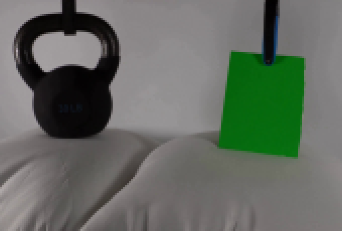
视觉工具实际返回图片 3
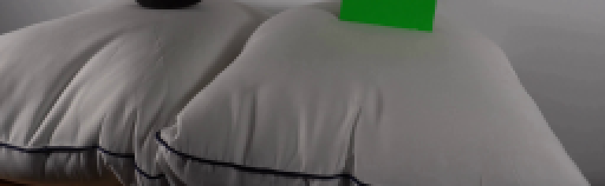
视觉工具实际返回图片 4
视觉工具实际返回图片 5
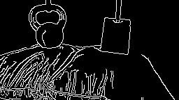
视觉工具实际返回图片 6
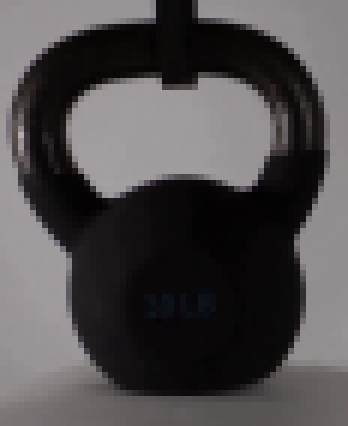
视觉工具实际返回图片 7
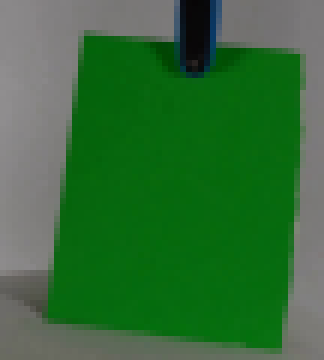
视觉工具实际返回图片 8
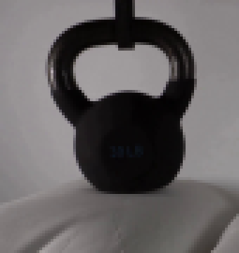
视觉工具实际返回图片 9
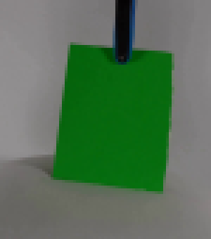
视觉工具实际返回图片 10
视觉工具实际返回图片 11
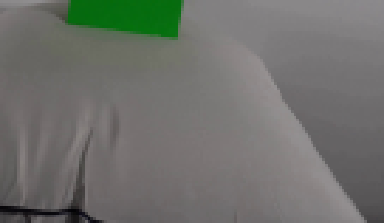
视觉工具实际返回图片 12
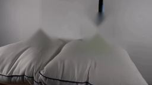
视觉工具实际返回图片 13
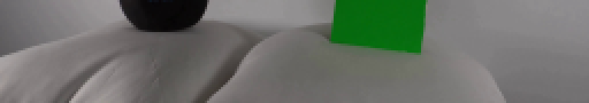
视觉工具实际返回图片 14
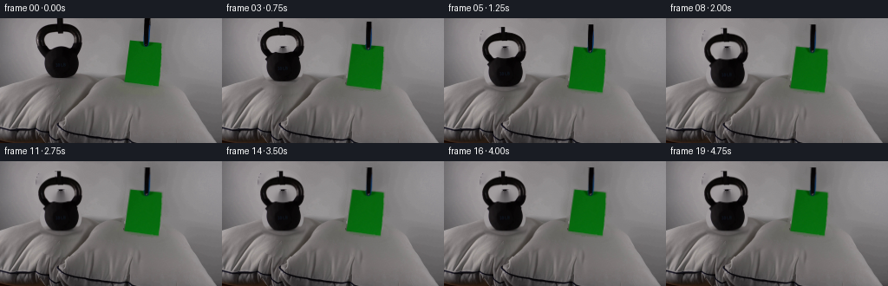
视觉工具实际返回图片 15
视觉工具实际返回图片 16
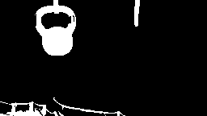
视觉工具实际返回图片 17
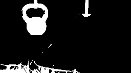
视觉工具实际返回图片 18
视觉工具实际返回图片 19
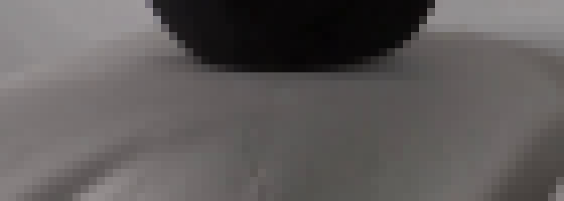
视觉工具实际返回图片 20
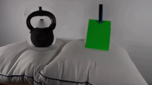
视觉工具实际返回图片 21
视觉工具实际返回图片 22
视觉工具实际返回图片 23
视觉工具实际返回图片 24
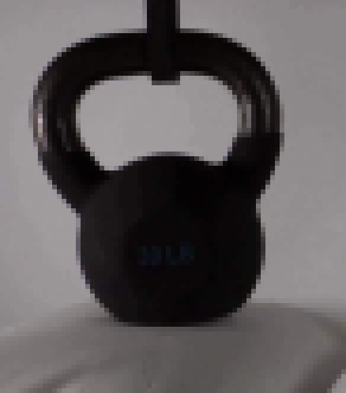
视觉工具实际返回图片 25
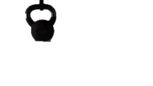
视觉工具实际返回图片 26
视觉工具实际返回图片 27
视觉工具实际返回图片 28
视觉工具实际返回图片 29
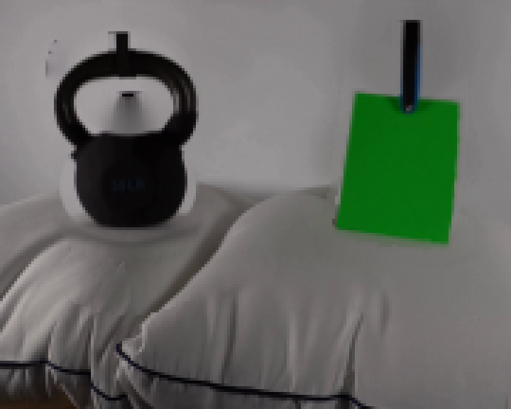
视觉工具实际返回图片 30
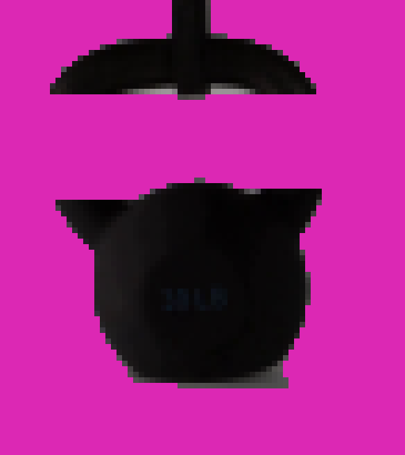
视觉工具实际返回图片 31
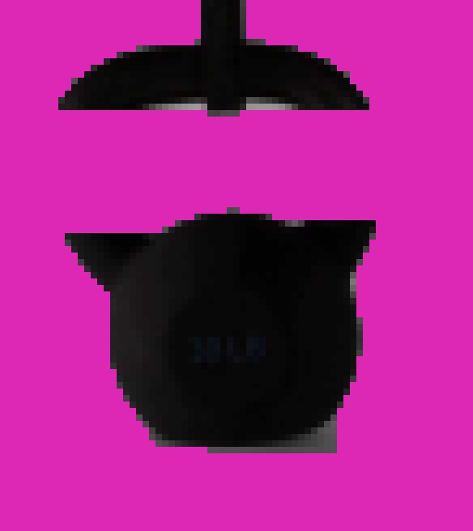
视觉工具实际返回图片 32
视觉工具实际返回图片 33

视觉工具实际返回图片 34
视觉工具实际返回图片 35
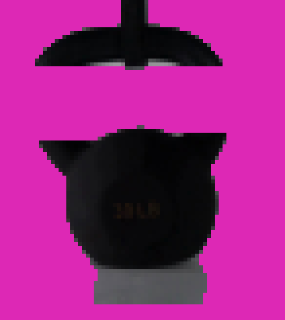
视觉工具实际返回图片 36
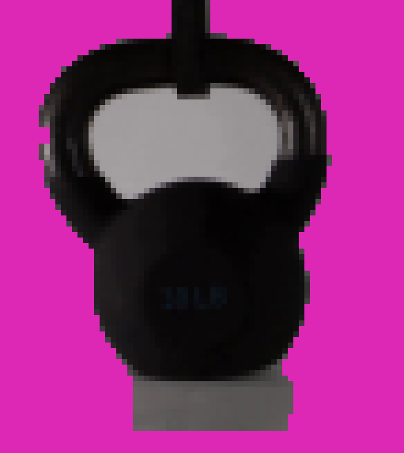
视觉工具实际返回图片 37

视觉工具实际返回图片 38
视觉工具实际返回图片 39
视觉工具实际返回图片 40

视觉工具实际返回图片 41
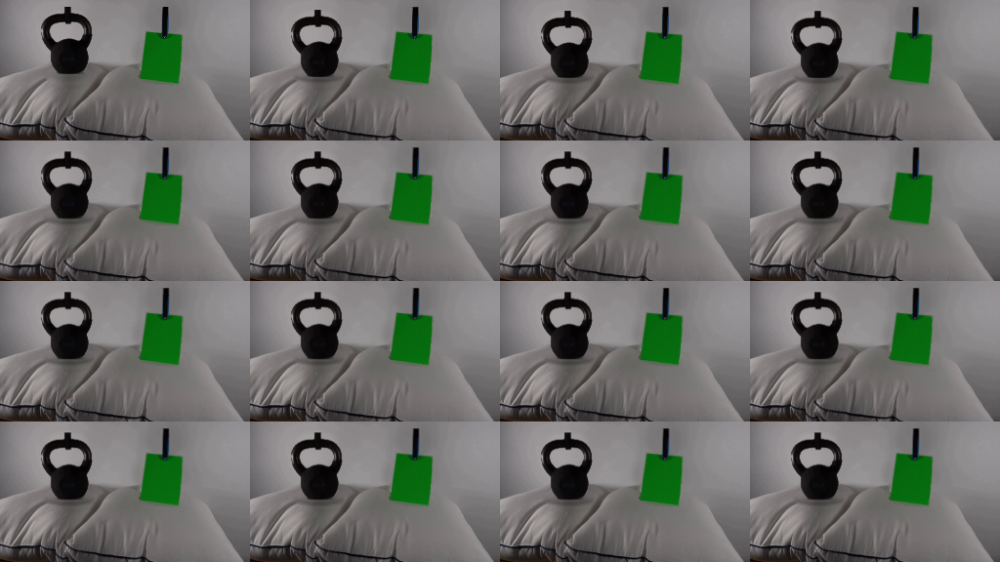
视觉工具实际返回图片 42
视觉工具实际返回图片 43
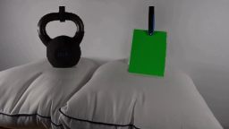
视觉工具实际返回图片 44
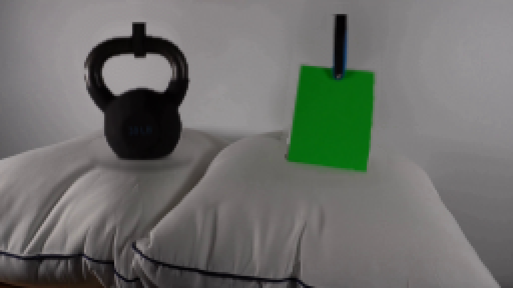
视觉工具实际返回图片 45
视觉工具实际返回图片 46
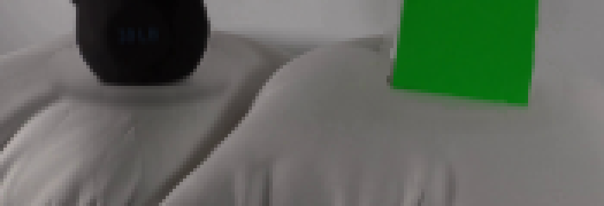
视觉工具实际返回图片 47
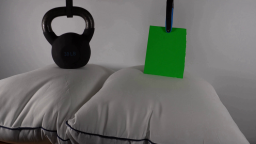
视觉工具实际返回图片 48
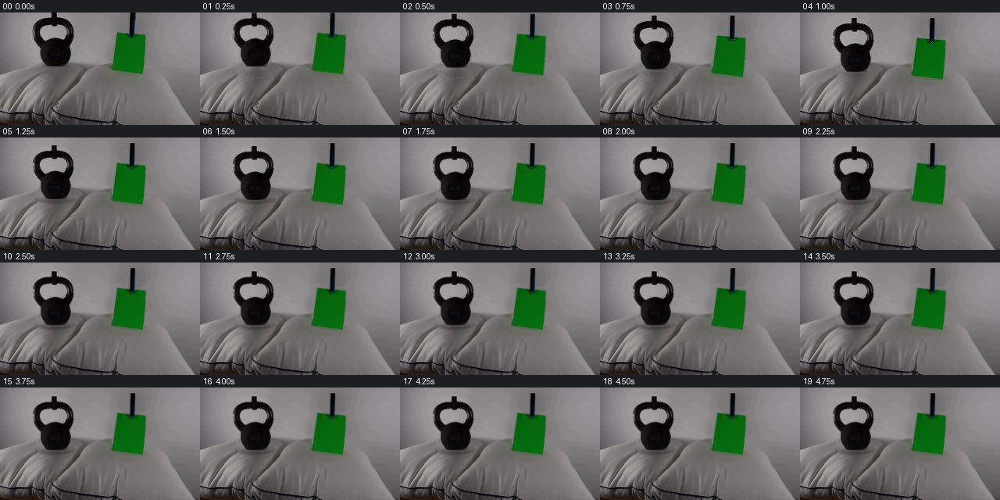
视觉工具实际返回图片 49
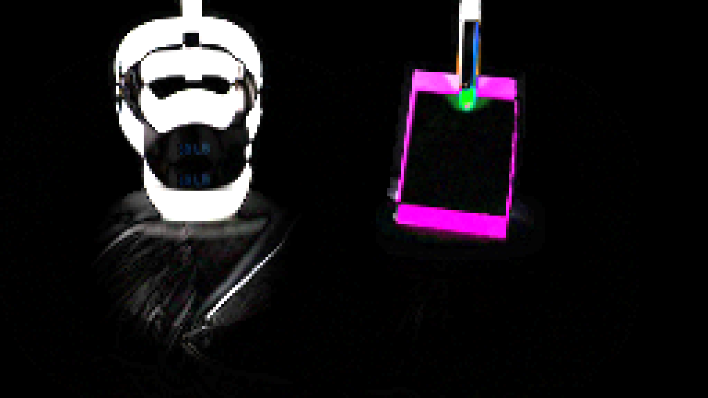
视觉工具实际返回图片 50
视觉工具实际返回图片 51
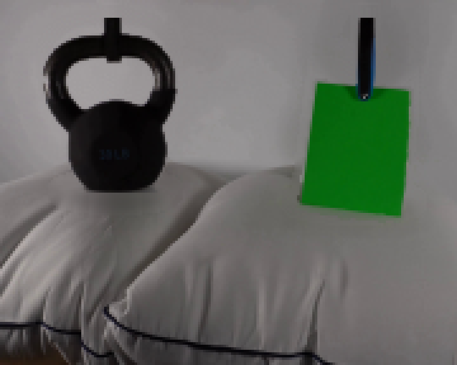
视觉工具实际返回图片 52
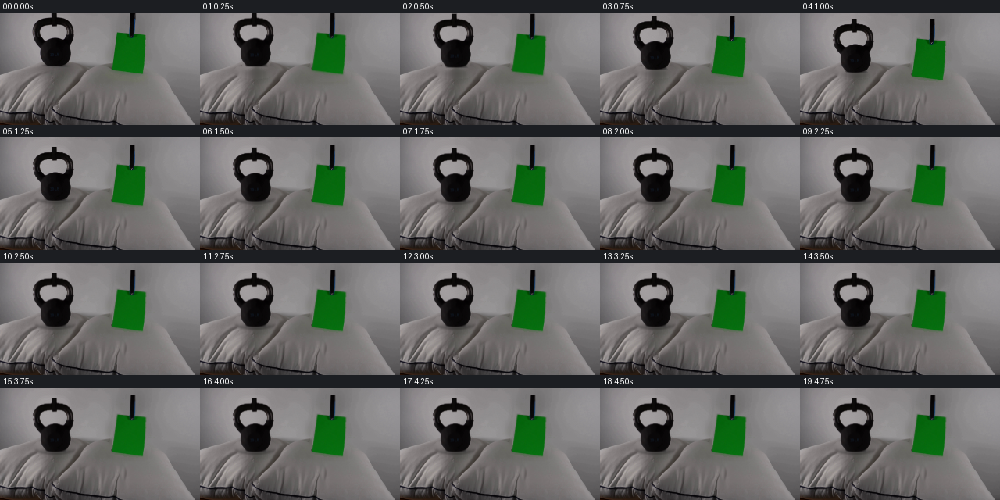
视觉工具实际返回图片 53
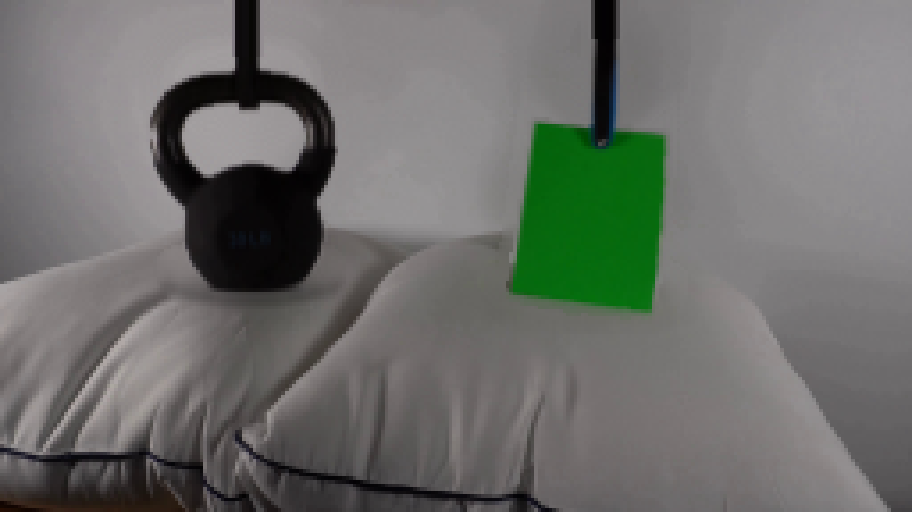
视觉工具实际返回图片 54
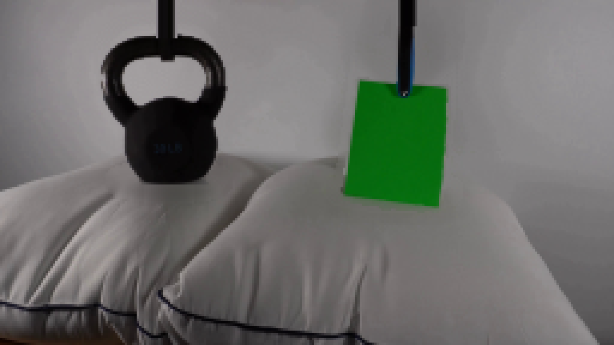
视觉工具实际返回图片 55
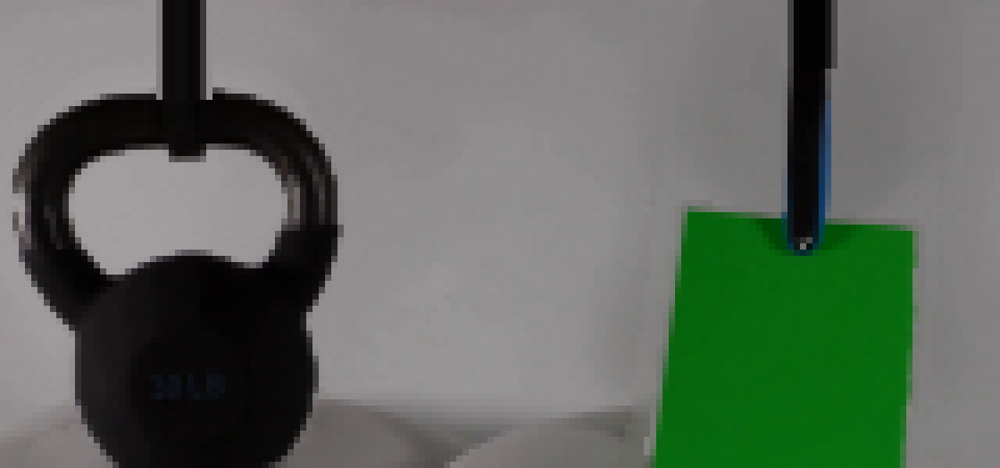
视觉工具实际返回图片 56
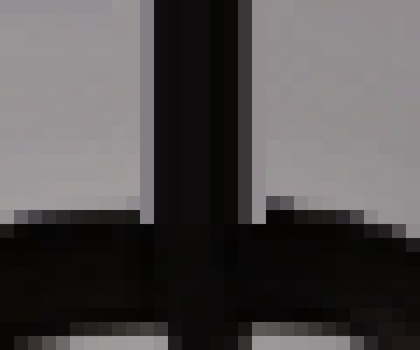
视觉工具实际返回图片 57
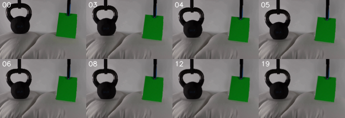
保存候选 7 份；完成命令 100 次；可验证图片返回 57 张。原始 API 响应与完整日志保留在本地。